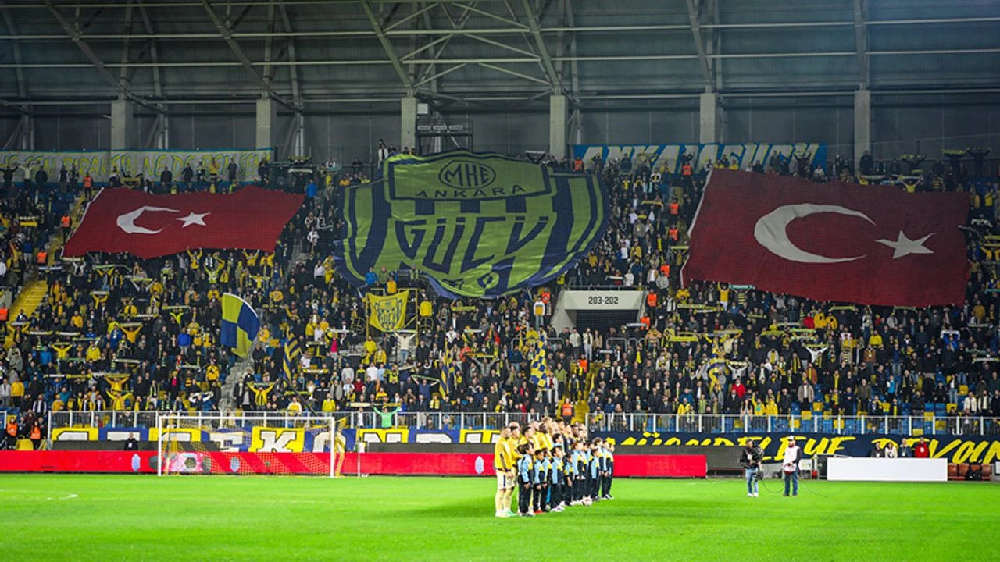
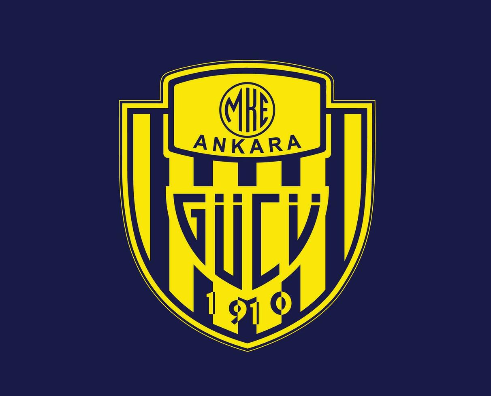
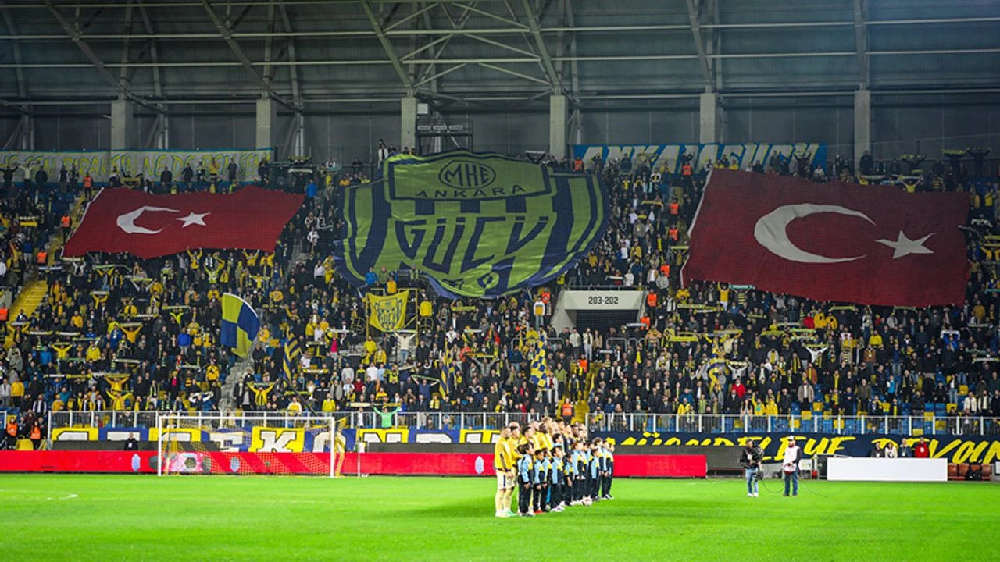
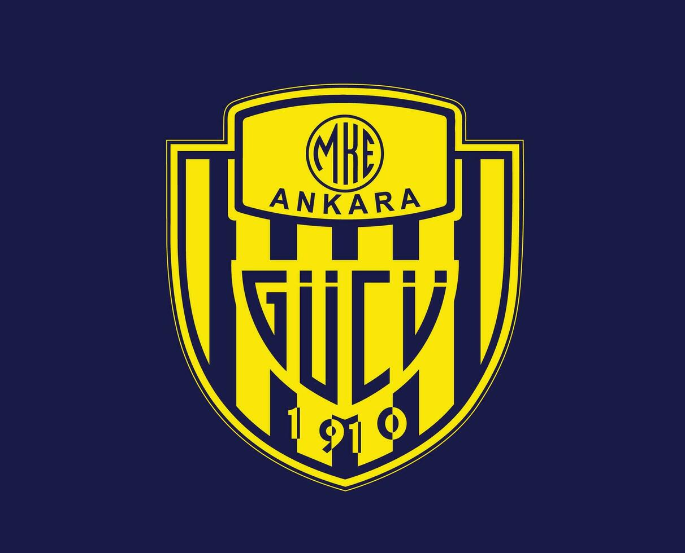

MKE Ankaragücü, Ankara'nın Süper Lig'de mücadele eden futbol takımı. 1910 yılında kurulan[1] MKE Ankaragücü'nün, 1911'de kurulan tam anlamıyla 1922'de faaliyete geçen futbol şubesidir. Maçlarını 22.000 kapasiteli Eryaman Stadyumu'nda oynamaktadır. Ankaragücü'nün bugüne dek kazandığı 1 Türkiye Futbol Şampiyonası, 2 Türkiye Kupası ve 1 Türkiye Süper Kupası şampiyonluğu bulunmaktadır.
Kuruluş MKE Ankaragücü'nün kökleri Zeytinburnu'ndaki, İmalât-ı Harbiye atölyesinde silah tamiratı ve imalatı yapan işçilere dayanmaktadır. Osmanlı İmparatorluğu döneminde İstanbul çapında maçların yapıldığı İstanbul Futbol Ligi sürmekteyken savunma sanayisinde çalışan işçi futbolcular ile buralara işçi yetiştiren meslek okullarında okuyan gençler kendi kulüplerini kurmak için girişimlerde bulunurlar. İmalât-ı Harbiye Mektebinin son sınıf öğrencilerinden Şükrü Abbas öncülüğündeki Turan Sanatkarangücü ile Agâh Orhan öncülüğündeki Altınörs İdmanyurdu aynı tarihte, 31 Ağustos 1910 günü kurulmuştur.[2] İki kulüplü bir birleşmeyle kurulduğu için kulübün kurucu iki başkanı vardır. Bu başkanlar Kazım Bey ve Hasan Muslihiddin Bey'dir.[3] Daha sonra birleşecek olan iki takım ilk maçlarını birbirlerine karşı yaparlar. 4 Nisan 1911 günü yapılan maç 0-0 berabere devam eden maç çıkan olaylar nedeniyle tamamlanamamıştır.[4] Bu dönemde sendikal faaliyette bulunarak işçi haklarını savunan çevrelerle kulüpler yakın temas halindedir.[5] İşgal yılları, Ankara ve Kurtuluş Savaşı Altınörs İdmanyurdu ve Turan Sanatkarangücü, kuruluşuna öncülük ettikleri Cuma Ligi'nde kesintili de olsa oynadıktan sonra I. Dünya Savaşı'nın sona ermesiyle oluşan yenilgi koşullarında spora ara vermek durumunda kalırlar. Kulüplerin tarihinde İstanbul'daki işgalcilerle yapılan maçlara dair bir kayıt bulunmaması, işgalcilerle maç yapılmasının reddedilmesiyle açıklanır.[6] Kulüplerin etkin olduğu silah fabrikalarının yabancı askerler tarafından basılması ve Kuvâ-yi Milliye hareketine desteğin engellenmesi üzerinde kulüpler Anadolu'ya geçme kararı alır.[7] Türk Kurtuluş Savaşı sırasında çok zor koşullarda orduya silah ve cephane sağlayan İmalât-ı Harbiye işçilerinin bazıları savaş sırasında hayatını da kaybedecektir. Yeni kurulan Cumhuriyet ve başkentte Ankaragücü 1 Nisan 1933 tarihli Gol Spor dergisinde Ankaragücü futbol takımı ve kulüp başkanı Nasuhi Bey. 17 Mart 1934 tarihli Ulus gazetesinde Ankaragücü futbol takımı Kazanılan bağımsızlığın ardından ilan edilen cumhuriyetin başkenti yeniden kurulurken, MKE Ankaragücü'nün de temelleri atılır. 1920 yılından itibaren Ankara'da bulunan iki kulüp 1922 yılından itibaren yeniden faaliyete geçer. Başkent Ankara'da ilk resmî futbol maçı 26 Ekim 1922 günü bugünkü Cebeci İnönü Stadyumu'nun bulunduğu yerde yapılan maçta Anadolu Sanatkarangücü askeri takım olan Talimgâhgücü'nü 2-1 yener. Başkentin gelişmesi ve özellikle işçilerin artmasıyla birlikte sonradan MKE Ankaragücü adını alacak kulübe destek artar.[8] Fabrikalar çerçevesinde dayanışma sandıklarıyla, işçi örgütleriyle birlikte gelişen kulüp sosyal alanda da faaliyet gösterecek, o dönemde ilgi çeken bir bando takımı kuracaktır.[9] Ankara'da kurulan ilk futbol ligi 1923-24 sezonuyla açılırken iki kulüp Anadolu-Turan Sanatkarangücü olarak birlikte katılır. Bu dönemden sonra çeşitli farklı isimler altında mücadele edilecektir. 1933 yılında bugünkü adı olan Ankaragücü adını alarak mahalli Ankara Ligi'nde çok kez şampiyon olacaktır. 1949'da Türkiye futbol şampiyonu olarak en büyük başarılarından birini yaşamıştır.[10][11]